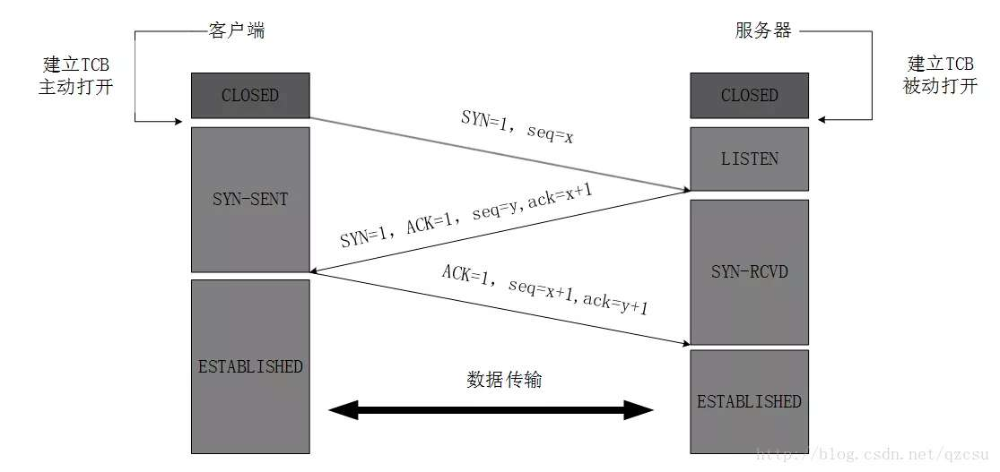
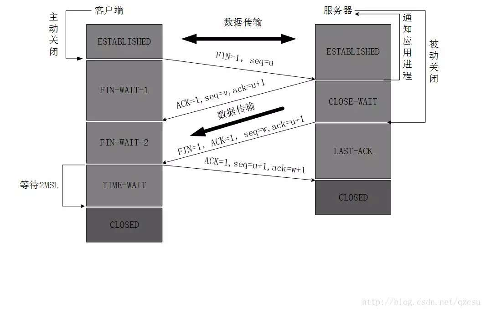

TCP和UDP
TCP 和 UDP 是传输层两个很重要的协议，很多应用层的协议都是基于这两个协议来实现的。
UDP
UDP 的全称是 User Data Protocol，即用户数据报协议。
特点
- UDP是一个非连接的协议，传输数据之前源端和终端不建立连接
- 可以同时向多个客户端传输相同的消息
- 信息包的标题很短，只有8个字节
- 吞吐量不受拥挤控制算法的调节，只受应用软件生成数据的速率、传输带宽、源端和终端主机性能的限制
- UDP使用尽最大努力交付，即不保证可靠交付
- UDP是面向报文的。发送方的UDP对应用程序交下来的报文，在添加首部后就向下交付给IP层。既不拆分，也不合并，而是保留这些报文的边界
应用场景
- 需要资源少，在网络情况比较好的内网，或者对于丢包不敏感的应用
- 不需要一对一沟通，建立连接，而是可以广播的应用
- 需要处理速度快，时延低，可以容忍少数丢包
TCP
TCP 全称是 Transmission Control Protocol，即传输控制协议，它相对 UDP 来讲要复杂的多。TCP 是面向连接的协议，在开始通信时要三次握手建立连接，结束通信时要四次挥手断开连接。
三次握手
三次握手是请求 -> 应答 -> 应答之应答三个回合。

简单来讲就是：
A:您好，我是 A。
B:您好 A，我是 B。
A:您好 B。
为什么需要三次握手？通过第一次握手和第二次握手，客户端可以知道自己发送的报文能够到达服务端，服务端返回的消息自己也能收到，并且服务端愿意与我建立连接。通过第二次和第三次握手，服务端可以知道自己发送的报文能够到达客户端，客户端返回的消息自己也能收到，并且客户端愿意与我建立连接。
假如只有前两次握手，服务端是不知道自己发送的消息是否能够到达客户端，也不知道客户端是否愿意建立连接。
假设有这样一种场景，客户端发送了第一个请求连接并且没有丢失，只是因为在网络结点中滞留的时间太长了，由于TCP的客户端迟迟没有收到确认报文，以为服务器没有收到，此时重新向服务器发送这条报文，此后客户端和服务器经过两次握手完成连接，传输数据，然后关闭连接。此时此前滞留的那一次请求连接，网络通畅了到达了服务器，这个报文本该是失效的，但是，两次握手的机制将会让客户端和服务器再次建立连接，这将导致不必要的错误和资源的浪费。
四次挥手

为什么建立连接是三次握手，关闭连接确是四次挥手呢？
建立连接的时候， 服务器在LISTEN状态下，收到建立连接请求的SYN报文后，把ACK和SYN放在一个报文里发送给客户端。
而关闭连接时，服务器收到对方的FIN报文时，仅仅表示对方不再发送数据了但是还能接收数据，而自己也未必全部数据都发送给对方了，所以己方可以立即关闭，也可以发送一些数据给对方后，再发送FIN报文给对方来表示同意现在关闭连接，因此，己方ACK和FIN一般都会分开发送，从而导致多了一次。
本作品采用知识共享署名 4.0 国际许可协议进行许可，转载请注明原文链接
本文链接：https://schhx.github.io/2019/04/24/TCP和UDP/